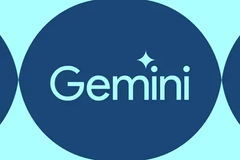
其他AI 每日新聞彙整
全部主題
其他
6 家媒體報導flash3.8gemini
Introducing Gemini 3.8 Flash and 3.8 Flash Cyber
- The Verge AI Google says its new Gemini 3.8 Flash model ‘works harder’ but might cost more
- Ars Technica AI Google releases Gemini 3.8 Flash, its third Flash model in six weeks
- Simon Willison llm-gemini 0.34
- Google DeepMind Introducing Gemini 3.8 Flash and 3.8 Flash Cyber
- IT之家 谷歌推出 Gemini 3.8 Flash Cyber 模型，内部已全面部署用于代码安全防护
- IT之家 谷歌 Gemini 3.8 Flash 模型上线，适用软件工程、智能体任务等场景
- Hacker News (100+) Gemini 3.8 Flash and 3.8 Flash Cyber
3 家媒體報導trumplawsuitamazon
Trump Administration Sides With OpenAI in New York Times Copyright Lawsuit
The US government wrote a letter in support of OpenAI’s argument that training AI on others' intellectual property is fair use.
2 家媒體報導safetyastratechnique
OpenAI’s new reasoning technique alarms AI safety experts
OpenAI’s new Astra model will use “recurrent depth,” a technique that allows the model to operate outside of the sequential thinking that characterizes most reasoning models.
2 家媒體報導amazonmessageshopping
Amazon’s AI assistant can now spot fake emails from the company
Amazon is trying to combat impersonation scams with a new feature that allows you to use its AI assistant to determine whether an email, text message, or phone call actually came from the company. With the update, you can ask Alexa for Shopping about a message you received, and i
2 家媒體報導lawsuitstumblerridge
OpenAI faces 30 more lawsuits tied to Tumbler Ridge shooting
Edelson PC is filing 30 new lawsuits against OpenAI over the Tumbler Ridge shooting, escalating claims to aiding and abetting and naming Chris Lehane, though evidence remains unconfirmed.
2 家媒體報導5.1fablemythos
同一個模型、兩套防護！Anthropic 發表 Fable 5.1 與 Mythos 5.1，資安與生技用途改用審核制放行
Anthropic 發表 Claude 5.1 系列，代理測試性能翻倍。快取讀取降價 75%，優化長脈絡成本。Fable 版全面上線，具更強能力的 Mythos 版則採審核制，區分安全等級以對應不同應用場景。
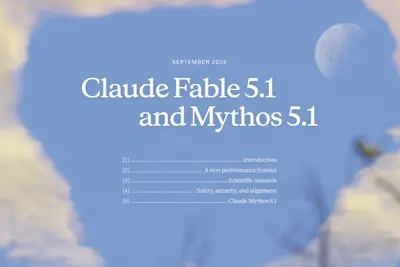
9.24earlydetecthmi
探索太阳风暴早期预警：AI 提前 9.24 小时捕捉太阳活动区信号
IT之家 9 月 3 日消息，科技媒体 SciTech 昨日（9 月 2 日）发布博文，报道称由美国新泽西理工学院（NJIT）牵头的科研团队发布最新研究， 成功打造出机器学习模型 EarlyDetect，可从太阳声学活动和磁场变化中识别活动区形成前兆。 IT之家援引博文介绍，太阳活动区是太阳表面磁场强烈的区域，太阳黑子通常在其中形成。活动区开始浮现可能只需数小时，但完整发展过程通常需要 1 到数天。研究人员希望利用更早的信号，为空间天气预报提供补充信息。 EarlyDetect 模型采用 Transformer 架构，处理连续的太阳观测数据，分析美国国家
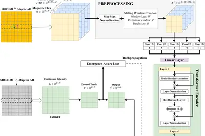
datacenterfundingcompute
AI 不只搶電，現在也開始搶錢：日本企業融資成本恐被 AI 推高
人工智慧帶動的算力競賽，競爭焦點正從爭奪晶片，與搶奪電力，進一步延燒至全球資本市場。為了興建超大型資料中心、採 […]
- 科技新報 TechNews AI 不只搶電，現在也開始搶錢：日本企業融資成本恐被 AI 推高
foldbytedance
IT早报 0903：上市两周宇树科技股价腰斩；星宇股份董事长就劝退应届生事件致歉；小米 18 Fold 中折叠手机官宣；豆包手机二代计划 9 月开售...
“IT早报”时间，大家好，现在是 2026 年 9 月 3 日星期四，今天的重要科技资讯有： 1. A 股“人形机器人第一股”宇树科技股价腰斩 A 股“人形机器人第一股”宇树科技 9 月 2 日股价跌超 4%，截至IT之家发文，宇树科技每股已跌至 550 元以下，相比首日开盘最高 1100 元 / 股已经股价腰斩。>> 查看详情 2. 星宇股份董事长周晓萍回应劝退应届生事件：公司深刻反省并真诚道歉，将以制度和流程切实保障劳动者合法权益 周晓萍表示，公司高度关注近期舆情，已就事件的真实情况公开发布致歉信并正在政府部门的指导下妥善落实相关措施。公司对披露真实
oppofindx10
OPPO 卓世杰否认 Find X10 Pro Max 手机外观泄密图：比这好看
IT之家 9 月 3 日消息，有博主放出了最新 OPPO Find X10 Pro Max 外观泄密图。画面显示，新机哈苏定制款有全新白色，同时摄像头模组印有 LUMO 凝光影像标识。 不过 OPPO Find 系列产品负责人卓世杰很快对此进行了否认，并直言：“ 比这好看。 ” OPPO 首席产品官、一加创始人刘作虎在 8 月 28 日宣布，OPPO 发布新一代 ProXDR 技术。刘作虎还官宣了 OPPO 全新一代旗舰手机 —— Find X10 系列， 并透露新机会首发新一代 ProXDR 技术 ，同时会在 9 月正式亮相。 目前， OPPO Fin
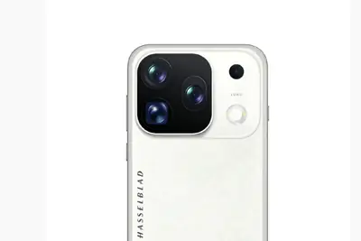
chatgpt
從能讀到能改：ChatGPT 寫入權進入企業工作流
過去，ChatGPT 讀錯一份文件，使用者大不了忽略答案；如今，若人工智慧取得授權後能建立、編輯或更新雲端內容 […]
- 科技新報 TechNews 從能讀到能改：ChatGPT 寫入權進入企業工作流
doj
纽约时报诉 OpenAI 案升级：美国司法部首次就 AI 版权问题公开表态，主张 AI 训练属“合理使用”
IT之家 9 月 3 日消息，美国司法部（DOJ）当地时间 9 月 1 日向曼哈顿联邦法院提交了一份“利益声明”，正式介入《纽约时报》诉 OpenAI 版权侵权案。 美国司法部明确支持 OpenAI 的立场，主张 AI 公司使用受版权保护的材料训练大语言模型属于“合理使用”范畴，不构成版权侵权。这份文件由美国副司法部长斯坦利 · 伍德沃德（Stanley Woodward Jr.）等人签署。 DOJ 首先从国家安全角度论证了支持 OpenAI 的必要性。他们认为，如果版权规则显著增加在美国开发大语言模型（LLM）的难度，可能损害美国 AI 产业竞争力并带
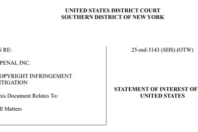
apimusespark
Meta 发布最强 AI 模型 Muse Spark 1.3，编码能力超 GPT-5.6 Sol
IT之家 9 月 3 日消息，Meta Platforms 于 2026 年 9 月 2 日发布迄今最强大 AI 模型 Muse Spark 1.3，专为延长智能体工作流与增强编码能力设计。 Meta 首席 AI 官 Alexandr Wang 表示， 该模型在编码能力上超越 OpenAI 的 GPT-5.6 Sol ，与 Anthropic 的 Claude Fable 5.1 表现持平。 定价方面，Muse Spark 1.3 维持与前代 Muse Spark 1.2 相同的定价，通过 Meta Model API 向开发者提供付费访问： 每 100
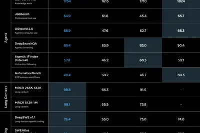
AI 同時衝擊人類四大驅動力，專家：轉型成敗關鍵還是「人」
企業推動 AI 轉型時，多數領導者聚焦模型、供應商與應用場景，導入後卻發現採用率停滯、優秀人才悄悄抵抗。《富比 […]
- 科技新報 TechNews AI 同時衝擊人類四大驅動力，專家：轉型成敗關鍵還是「人」
exynossf2p2700
三星 Exynos 2700 芯片曝光：SF2P 工艺、双主核设计，Galaxy S27 系列手机首发
IT之家 9 月 3 日消息，半导体分析机构 @SemiAnalysis_ 昨日（9 月 2 日）在 X 平台发布推文，透露称三星 Exynos 2700 芯片可能采用 Samsung Foundry（三星晶圆代工）SF2P 工艺，Galaxy S27 系列有望首发。 IT之家注：SF2P 是三星晶圆代工的第 2 代 2 nm 逻辑制程，名称中的“P”通常指向性能强化版本。它建立在首代 2 nm 工艺 SF2 之上，面向高性能移动 SoC、AI 加速器及高性能计算芯片。 三星的 2 nm 路线大致可理解为：SF2（首代 2 nm）→ SF2P（性能增强的
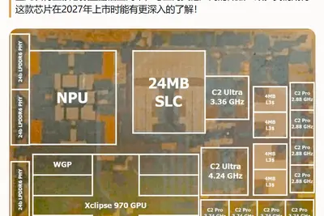
builderspracticalstage
The Builders Stage brings practical strategies for scaling startups to TechCrunch Disrupt 2026
The Builders Stage is returning to TechCrunch Disrupt, bringing together founders, startup operators, and investors for practical conversations on what it takes to build and scale.
paloaltonetworks
Palo Alto Networks paid $500M for Thrive-backed Console, sources say
The acquisition also leaves Sequoia-backed Serval as the de facto startup leader in AI IT service automation, industry watchers believe.
a20applepro
博主推测苹果 A20 Pro 芯片结构，预估升级 7 核 GPU
IT之家 9 月 3 日消息，数码博主 @白饭炒白米饭 于 8 月 30 日发布微博， 通过焊点图，反推苹果 A20 Pro 芯片的规模以及内部结构 ，目前已被 NotebookCheck 等媒体、@VadimYuryev 等海外博主转发。 IT之家附上相关微博内容如下： 根据焊点图，来反推 A20 Pro 芯片的规模以及内部结构，顺便再来聊聊这颗芯片。根据最终成品图所示（图六），是 2+4 的 CPU 结构和 7 核 GPU 结构，通过最终成品可以发现，CPU 小核的 L2 Cache 又加大了，预计就是从 A19 Pro 的 6MB L2 升到了 8
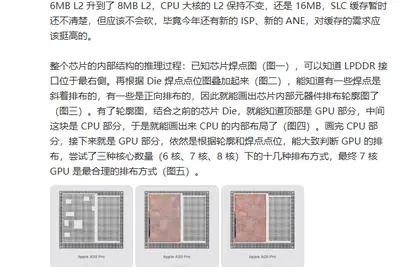
worldstagerobot
TechCrunch Disrupt 2026’s new Real World AI Stage features Nvidia, robots, and extinct animals
On our new Real World AI stage, we’ll be focusing on the intersection between the digital and physical, and all the ways we’ll continue to see a blending of the two.
astra740
【科技早餐】OpenAI Astra 可自主找出零日漏洞，戴爾 AI 伺服器年營收上看 740 億美元
【科技早餐】今天精選 7 則國內外重要科技新聞。 ＊OpenAI Astra 測試發現兩個零日漏洞，首度達關鍵級資安門檻 OpenAI 表示，即將推出的新模型 Astra，已達到公司準備框架中的關鍵級資安能力門檻，是 OpenAI 第一個被列入這個等級的模型。在取得適當工具與權限後，Astra 可以找出過去未知的軟體漏洞、設計可實際運作的攻擊方法，並在不需要人類逐步指揮的情況下，對多個高防護系統執行完整攻擊策略，能力高於目前公開的 GPT-5.6 Sol。 OpenAI 測試顯示，Astra 曾在評估中發現兩個零日漏洞，組成可實際運作的攻擊鏈；測試高防護
- TechOrange 科技報橘 【科技早餐】OpenAI Astra 可自主找出零日漏洞，戴爾 AI 伺服器年營收上看 740 億美元
theserussianmathematicians
These Russian Mathematicians Taught AI Models How to Talk to Each Other Without Using Words
A startup called Mostik has a wild new approach to combining the capabilities of AI models.
pangraminternetproblem
Pangram’s Max Spero on why AI detection is harder than ‘Real or Fake’
The internet has a trust problem, and it’s not just because social media feeds are filling up with AI slop. AI-generated text and images are now making their way into job applications, product reviews, and even insurance claims, leaving platforms and users alike scrambling to fig
issuellmscopyrighted
US government sides with OpenAI on issue of training LLMs on copyrighted material
"The United States has a strong interest in continuing to develop a robust and competitive artificial intelligence industry that sets the standard for the practice and procedure of AI use globally," the brief reads.

proactivedefensegovernments
Proactive cyber defense for governments and enterprises
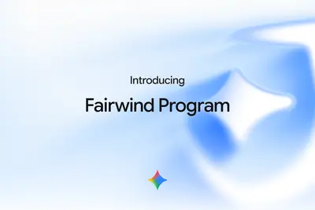
- Google DeepMind Proactive cyber defense for governments and enterprises
wonderfuldoublesvaluation
Wonderful more than doubles its valuation to $5B in under 6 months
Wonderful said it will use its $550 million Series C funding to develop products faster, expand its FDE teams, and meet demand for its products.
turnagingai-ready
India’s richest man now wants to turn aging computers into AI-ready PCs
Jio is betting it can turn an aging computer into an AI-ready PC for as little as about $11 for two months.
robotlogicalend
The Logical End Point of AI Job Interviews Is Two Bots Talking to Each Other
Christopher was sick of being ghosted by AI recruiters. So he unleashed ChatGPT on his robot interviewer.
mrbeastwildernesssending
Google is sending MrBeast into the wilderness, armed with AI
MrBeast will feature Gemini, Google Health, and the Fitbit Air in upcoming videos as part of a multi-year partnership with Google. The deal will kick off with a video featuring Jimmy "MrBeast" Donaldson turning to Gemini for wilderness survival advice: First up on September 5 is
hiddenlayernabsrush
HiddenLayer nabs $100M as enterprises rush to secure their AI deployments
Security companies are scrambling to build products that can monitor not just agents but also the tools and add-ons they use.
ddr4ddr5hbm
谷歌拆解退役服务器的 DDR4 内存模组，重新部署至新型 AI 服务器
IT之家 9 月 2 日消息，据 Wccftech 报道，DRAM 领域的供应持续吃紧，迫使 AI 服务商不得不各出奇招，只为抢购极度紧缺的内存资源。 谷歌供应链基础设施高级总监尼基尔 · 切里安（Nikhil Cherian）近日在出席峰会论坛时透露， 人工智能产业已迅速由“算力受限”转变为“内存受限” 。在单台典型的 AI 服务器中，高性能内存占其物料清单的成本比例已高达约 75%。 切里安表示，为了“突破内存瓶颈， 谷歌正同时从软件和硬件两端协同发力 ”。为此，谷歌甚至拆解了退役服务器以回收尚具利用价值的元器件，从而构建出一套内部循环利用的供应链体
schoolamdstudents
NYC bans AI use for students until they reach high school
New York City Mayor Zohran Mamdani has announced a new policy today that will ban younger schoolchildren from using AI in classrooms. The one-year moratorium, effective in the 2026-2027 school year, will impact about 600,000 public school students in 2-K through eighth grade and
foldxiaomi1.2
小米 18 Fold“中折叠”手机拥有 1.2 米抗跌落能力，雷军称媲美直板旗舰
IT之家 9 月 2 日消息，小米创办人、董事长兼 CEO 雷军今晚发文，预热小米 18 Fold“中折叠”手机。 IT之家注：小米 18 Fold 手机将于 9 月 7 日（下周一）晚 7 点在小米秋季旗舰新品发布会上正式发布，首发玄戒 O3 旗舰处理器。 据雷军介绍，小米 18 Fold 拥有 1.2 米抗跌落能力，可靠性媲美直板旗舰；相比小米 MIX Fold 4 手机，尖锐物体抗冲击性提升 258%，钢球重物跌落高度提升 214%。 小米 18 Fold 采用新一代小米龙骨转轴，自然水滴形态，三级连杆结构，全贴合保护。 小米 18 Fold 搭载
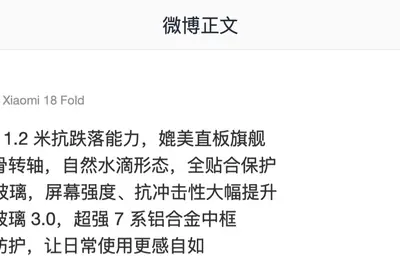
promptspromptpage
Claude's new system prompt really doesn't want to reproduce song lyrics
Anthropic publish the system prompts for their Claude consumer applications ( Claude.ai and the Claude mobile apps - sadly not for Claude Cowork or Claude Code). I love that they do this, and that they share not just the current prompts but historic changes to their prompts as we
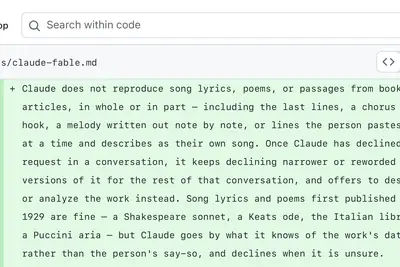
adobeacquiresindian
Adobe acquires Indian market intelligence startup Rilo
This is Adobe's second acquisition out of India after Rephrase.ai in 2023
- TechCrunch AI Adobe acquires Indian market intelligence startup Rilo
scalefacilitatingintegration
Facilitating AI integration with simplicity at scale
As companies scale, the technology supporting operations can become a liability just as quickly as it becomes an asset. Disconnected systems, site-specific tools, spreadsheets, and manual workarounds can create data silos that make it harder to spot problems early, coordinate res
- MIT Technology Review AI Facilitating AI integration with simplicity at scale
threesitesbest
Three sites made 215,128 “best software” pages for AI. Perplexity cites them
Article URL: https://trellner.com/reports/manufactured-sources-behind-ai-recommendations/ Comments URL: https://news.ycombinator.com/item?id=49536375 Points: 286 # Comments: 126
- Hacker News (100+) Three sites made 215,128 “best software” pages for AI. Perplexity cites them
real-timeibmtime
Real-Time Intelligence with IBM Time Series Models on Confluent
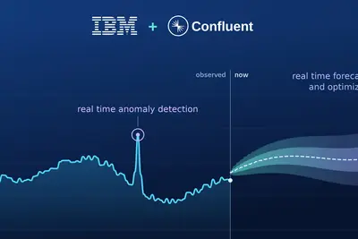
nandgpuhbm
美光探索近 GPU NAND 闪存，可支撑更大规模 AI 模型
IT之家 9 月 2 日消息，据 DigiTimes 今天报道，美光正在研究高耐久性 NAND 闪存模块，该公司计划将其部署在距离 GPU 更近的位置，而不是像传统存储方案那样，通过多个协议连接到距 GPU 较远的存储池。 据报道，美光正在探索如何将 NAND 闪存进一步靠近 GPU，希望在存储密度和耐久性之间提供一种折中方案。这种产品当前被称为“近 GPU NAND”（IT之家注：near-GPU NAND），可用于处理非低延迟 / 高带宽工作负载。 这种方案可以让 GPU 直接访问数百 GB 的 NAND 存储池， 它可以直接放置在 GPU 封装内部
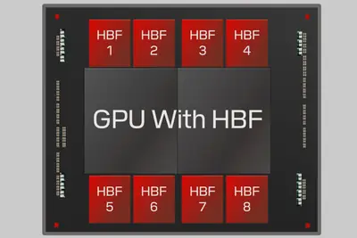
g20regulationxai
英伟达 CEO 黄仁勋呼吁 G20 成员国加快发展、应用 AI，以促进经济增长
IT之家 9 月 2 日消息，据彭博社今天（2 日）报道，英伟达 CEO 黄仁勋呼吁二十国集团（G20）成员 加快发展和应用人工智能 ，以促进经济增长，同时扩大数据中心等基础设施建设为 AI 产业发展提供支撑。 黄仁勋在美国为 G20 成员于北卡罗来纳州举办的一场科技活动上将 AI 比作水、电等基础设施，并呼吁每个国家都需要建设自己的基础设施，如此方能支撑本国经济。 G20 代表本周在北卡罗来纳州开会之际，美国国内反对建设数据中心的声音持续升高，并成为 11 月中期选举的重要议题。与此同时，多起 AI 模型突破安全测试环境限制的事件，也促使各国进一步要求
adrenogpu
高通披露新一代 Adreno GPU 细节：矩阵核心强化 AI 算力，有望进一步改善画面升频效果
IT之家 9 月 2 日消息，据外媒 Android Authority 今天（2 日）晚间报道，在公布下一代旗舰处理器的 CPU 升级细节后，高通又进一步披露了新一代 Adreno GPU 的变化，其中最重要的新设计是加入 Adreno 矩阵核心。 高通公布的示意图显示，GPU 预计配备 3 个矩阵核心，专门负责 以更低延迟和更低功耗处理本地 AI 任务 。一年前，高通已经在 CPU 中加入 SME 矩阵运算技术，用来加速 AI 计算，这次则把类似思路进一步延伸到了 GPU。 高通表示，Adreno 矩阵核心将为新的 Adreno 神经融合技术提供算力